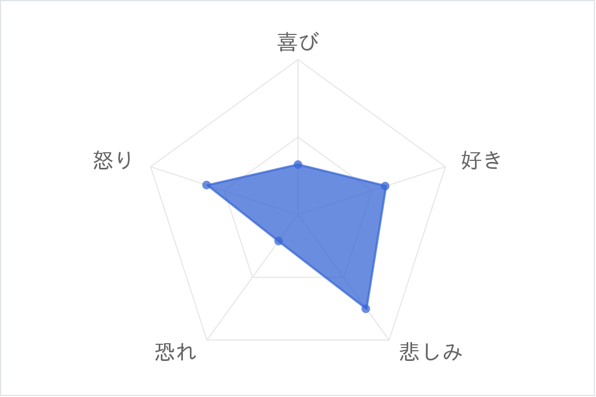
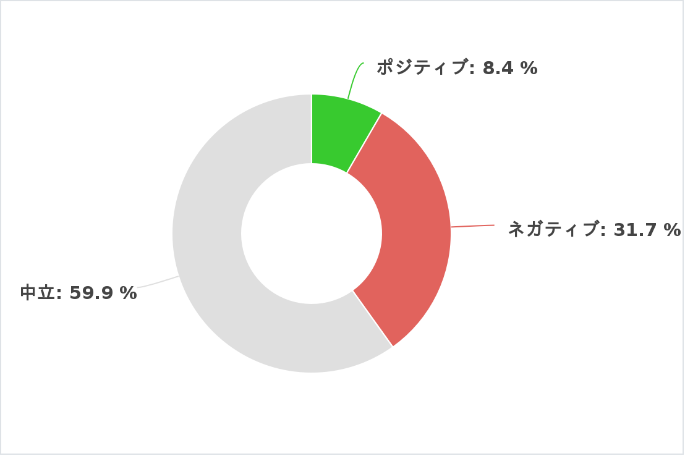

2000年代の分析
テクノロジーの急速な進化と国際化が進む中で、経済と社会の多様性が拡大した「変革の時代」
単語の色は品詞の種類で異なっており、青色が名詞、赤色が動詞、緑色が形容詞、灰色が感動詞を表しています。
分析結果
感情のレーダーチャート
2000年代の歌詞は、個人の感情や内面、複雑な人間関係に焦点を当てたものが多く見られました。特に失恋や別れ、孤独といったテーマが繰り返し扱われており、感情的な葛藤や苦しみが歌詞に反映されていました。これらのテーマは、音楽を通じてリスナーが自分自身の感情や経験と向き合う手段として機能していた可能性があります。
センチメント分析
全体的にはポジティブな歌詞が多く、特に「愛」や「夢」、「未来」などの前向きなキーワードが多用されていました。しかし、ポジティブ一辺倒ではなく、「別れ」や「涙」、「後悔」といったネガティブな感情表現も無視できない存在感を示しており、現実の苦しみや葛藤が歌詞に反映されていることがわかります。このバランスが、当時のリスナーにとってリアルで心に響くものだったのでしょう。
総括と影響
2000年代のヒット曲は、ただ明るい希望や夢を歌うだけでなく、現実の辛さや痛みをリアルに描いている点が特徴的です。多くの曲が、希望と共に苦しみや悩みも伝えることで、リスナーに深い共感を与えていました。そうした楽曲は、人々が抱える不安や心の痛みに寄り添い、励ましや癒しを提供する役割を果たしていたのではないでしょうか。現実を直視しながらも、前向きに生きようとするメッセージが、多くの人々の心に響いた時代だったのだと思います。この時代はインターネットの普及やグローバライゼーションが進んだことで、個々の感情や経験が多様に表現されるようになりました。社会の変化や個人の内面的な葛藤が歌詞に色濃く反映されているのが特徴です。 特に2000年代の音楽は、聴く人たちに強い共感を呼び起こし、感情的なつながりを生む力を持っています。恋愛や人間関係の複雑さを描くことで、より深いメッセージが込められた作品も多く、これがこの時代の音楽の魅力の一つと言えるでしょう。